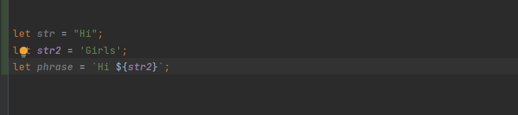
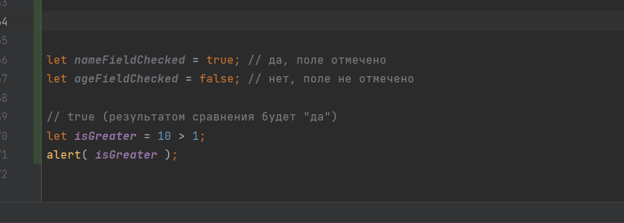
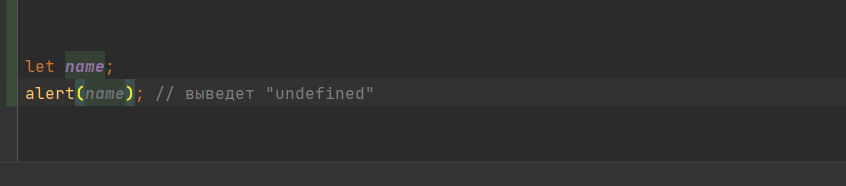

Значение в JavaScript всегда относится к данным определённого типа. Например, это может быть строка или число.
Есть восемь основных типов данных в JavaScript.
В JavaScript есть два ограничения, касающиеся имён переменных:
Имя переменной должно содержать только буквы, цифры или символы $ и _.
Первый символ не должен быть цифрой.
Строка (string) в JavaScript должна быть заключена в кавычки.
Булевый тип (boolean) может принимать только два значения: true (истина) и false (ложь).
Это просто специальное значение, которое представляет собой «ничего», «пусто» или «значение неизвестно».
Если переменная объявлена, но ей не присвоено никакого значения, то её значением будет undefined:
В JavaScript есть 8 основных типов данных. Семь из них называют «примитивными» типами данных: number для любых чисел: целочисленных или чисел с плавающей точкой; целочисленные значения ограничены диапазоном ±(253-1). bigint для целых чисел произвольной длины. string для строк. Строка может содержать ноль или больше символов, нет отдельного символьного типа. boolean для true/false. null для неизвестных значений – отдельный тип, имеющий одно значение null. undefined для неприсвоенных значений – отдельный тип, имеющий одно значение undefined. symbol для уникальных идентификаторов. И один не является «примитивным» и стоит особняком: object для более сложных структур данных.